学んだぶんだけ、
ひよこからチキンへ。
いただいた原案が、そのまま相棒に。
輪郭も、笑顔もそのまま。部位分けを活かして、呼吸・羽ばたき・力こぶ・まばたき・うなずきを作りました。チキンのベースカラーは資格ごとに設定できます。
正本は、この2つ。


学びの積み重ねとともに、4段階で成長。
ひよこ
いっしょに、ひとつずつ。
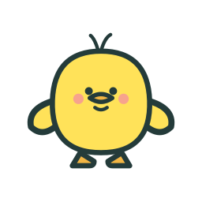
育ちざかり
少しずつ、たくましく。
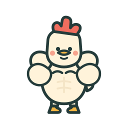
若鶏
今日もいっしょに学ぼう。
チキン
これからも、いっしょに。
定着率と学習準備度から内部で算出。数値や計算は意識しなくて大丈夫。学習終了後だけ成長を披露し、無料・模試なしでも最後まで育ちます。誤答・時間経過・問題追加で獲得済みの姿が戻ることはありません。合格判定とは別です。
アイコンも、同じチキンの顔。
qualification.json から。別の資格でも同じ生成スクリプトを使用できます。ホームは定着・学習中・これからの3区分のバーと件数。準備度・定着率・科目別の状態は「記録」に統合し、相棒の成長とは区別します。ノルマ達成後も3区分は残ります。
ひよこの6状態。
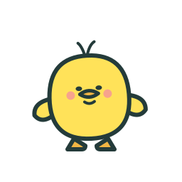
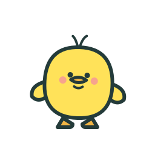
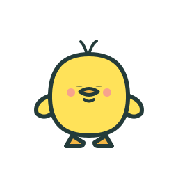
チキンも、同じやさしさ。
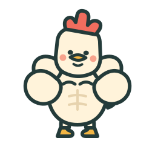
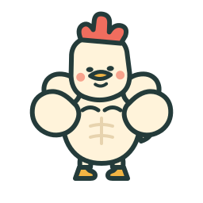
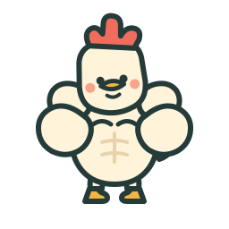
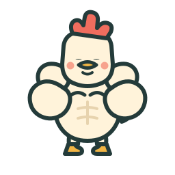
小さくしても、同じ相棒。
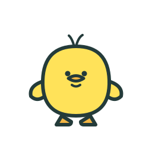
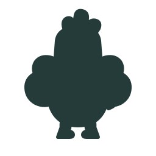
アプリの中で、一緒に学ぶ。
初回・ホーム・問題探し・回答後・結果・記録・復習ガイドへ。ホームの相棒をタップすると、「応援して」「力こぶ！」「ひと休み」で反応を楽しめます。その下には日付ごとの全回答。新しい順／古い順を切り替え、回答から問題を開けます。
待機中も呼吸と20種類のランダムなアクションで動き続けます。状態に合わせた候補から選び、同じ動きは連続させません。正解にはジャンプと羽ばたき、誤答には笑顔のうなずき。問題文右上には置きません。成長は学習終了後の「成長したよ！」画面で。画面外・Reduce Motion・省電力では停止。
このページは静止姿の比較です。動きは通常アプリの「学習の相棒」、Xcode Preview、またはDebug起動引数 -TankeiGallery で確認できます。